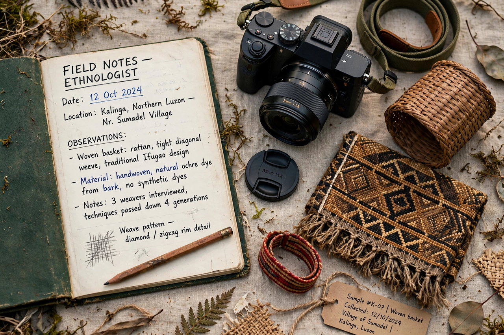

Ethnology
From Wikipedia, the free encyclopedia

Ethnology is the branch of Anthropology that compares and analyses the characteristics of different peoples and the relationships between them — their cultures, languages, histories, economies and institutions — typically drawing on ethnographic data gathered by fieldworkers. Where ethnography describes a particular culture, ethnology is cross-cultural and theoretical; the terms' use varies by national tradition (in much of Europe ethnology covers folklore and one's own society's traditions).
Development
Nineteenth-century ethnology grew from learned societies and museum collections, organising peoples into evolutionary sequences (Morgan's savagery–barbarism–civilisation) now discarded. Twentieth-century ethnology absorbed Boasian particularism, British structural-functionalism, French structuralism (Lévi-Strauss's kinship and myth analyses) and cross-cultural statistical comparison (the Human Relations Area Files, Murdock's Ethnographic Atlas).
Today
In the anglophone world the field largely merged into cultural/social anthropology, while European ethnology departments (Volkskunde turned Europäische Ethnologie) refocused on everyday culture at home — migration, heritage, foodways. The comparative ambition survives in databases of cultural traits used to test hypotheses about cultural evolution with phylogenetic methods borrowed from biology.